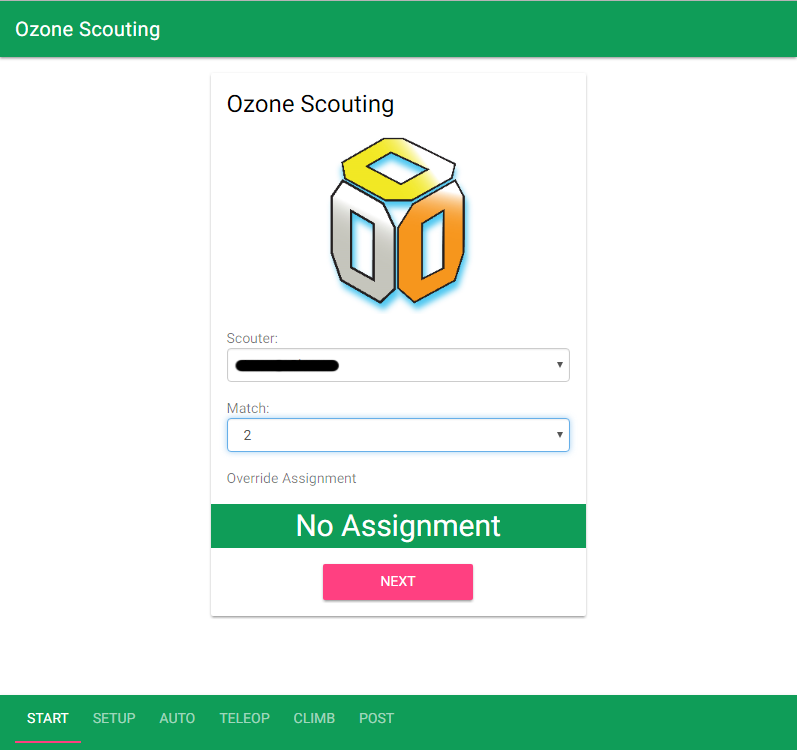
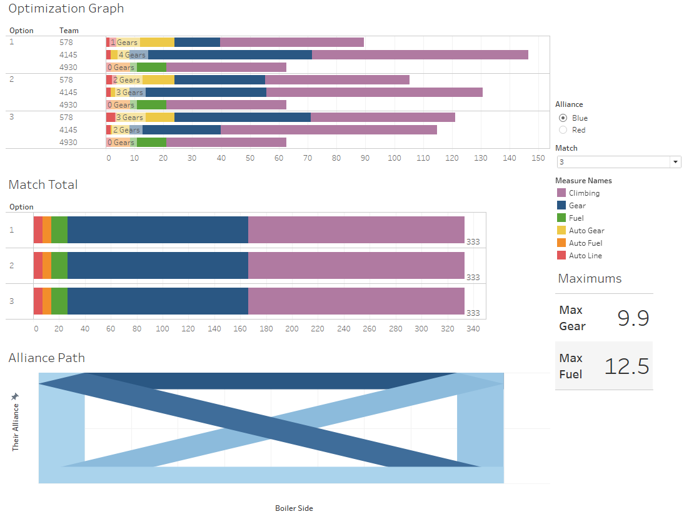
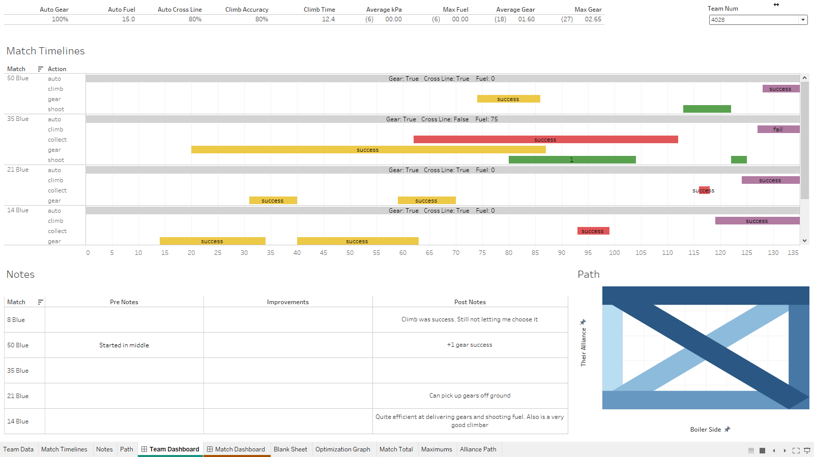
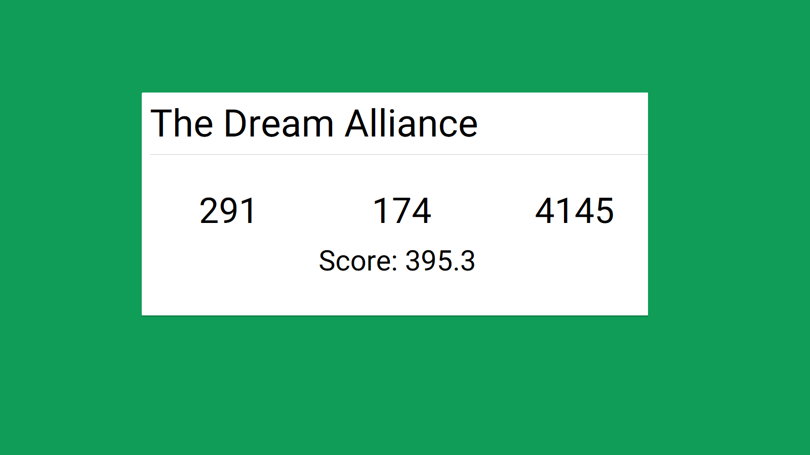

Robotics Scouting
February 2017 - March 2017
In 2016, our robotics team created its first scouting system. Scouting in FRC is when you record information about other teams to better prepare to work with or compete with them. That first scouting system was a program hosted from a computer that other devices would connect to through a wired network. It would then make decisions about matches from that data collected. We won an award that year for our scouting system. I didn't help make or operate any of it, so that is about as much as I know.
In 2017, I wanted to follow in the team's footsteps, so early in the year, I started developing software. Inspired by my passion for AP statistics, I decided to make the program prediction-based. I added probability of win calculations and all other sorts of features.
About two weeks later, I heard other people saying that they wanted to work on scouting. I joined in on the conversation, and we started from scratch. The original team was 3 students and a parent. We had a series of meetings where we discussed objectives and end goals. It was a pretty good experience to be working on a team with mixed experiences. The parent had worked with this web service called Drupal. It was able to store data and display webpages. We decided it may be useful to use.
Once we had all the ideas on the board, we started eliminating and narrowing down onto what we wanted. We decided would have a web app to collect data, a website that you can cache and run as an app. We would then share this app with other teams and have them collect data, then share some of our resources with them. Another student was in charge of the app. How it would work is you record what happens and when it happens during a match. When the robot picks something up, you click a button. When the robot drops it off, you click a button. Then at the end of the match, you can record notes and show where the bot usually traveled. All of this data would effectively make a summary and timeline of the match. The team scout recorded all that information and their name.

I worked on the data storage website and the analytics. The website was made with Drupal. I made data structures and Mr. Worth taught me how to make modules using PHP. I made modules to take JSON formatted input and create the data structures to represent that information. From the website, you could view each match and info about them. From that point, the data was exported through JSON and downloaded to be analyzed.
My analysis program was created in Visual Basic. It looked at the events recorded and then converted that into useful metrics. These metrics included the accuracy of their shooter, time to climb a rope, and how many gears they can deliver in a match. All of this data was then compiled down into team and match info. For each match, it looked at how much time it took for a team to score fuel and gears and then calculated how many gears and fuel each team should score in an average match. This info was then used to predict how matches would turn out. Using the statistics, it ran some different scenarios and found which scenario led to the highest score. After all this processing, the data was exported into CSV files.
All of this data meant nothing if you didn't have a way to look at it. Someone recommended to me Tableau, a data visualization software. It looked nice and had many visuals to represent the data we processed. We made an info sheet for team info and a sheet for match info. You just selected which team or match you want, and it will show you all the data for that team or prediction for that match. There is too much info to list, so I will show you a picture of each.
Match Dashboard:

Team Dashboard:

Before each match, we would print off the match dashboard and brief our alliance on the predicted outcome and best strategy from all the data. When we saw we were going to win, we followed the way the paper suggested we win. When we were predicted to lose, we looked where the other team drove and how they would get points so we could get in their way. We never lost a match we were predicted to win, and we won some matches we were predicted to lose.
One other thing I wanted to make was a slideshow in the pit area that will show summaries of scouting data. The slideshow would be updated live with the data and report some fun information. Some slides were fastest climbers, best shooter, and "Dream alliance", the pairing that would do the best together. All of this could be easily updated by plugging a flash drive in the laptop containing the CSVs. Once the drive was plugged in, it would trigger a copy of all the scouting info and update the slideshow. Pretty cool, huh?
